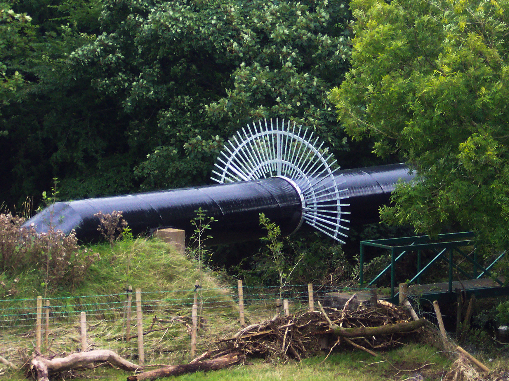

Fabrication
Custom fabricated metal structure installed outdoors
Explore the detail, then discuss the requirements of your own project.
Discuss your design
A closer look.
An example of fabrication. The material, dimensions, layout and finish of your project can be discussed directly with the team.
← Back to all work